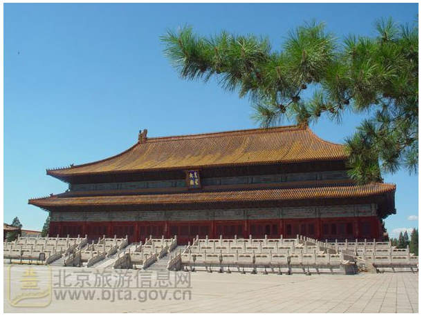

北京市劳动人民文化宫
太子林
此处古柏独立成林，相传为明朝几代太子所植。太子年幼调皮，随意栽植，不循行距，随从亦不敢阻拦，任其所为，故而成林后与它处柏林不同，纵横排列参差不齐，形成独特之景观。
太子林
“中国气象科技展厅”位于中国气象局气象科技大楼一层，展厅面积800平方米，分东西两厅；2006年3月23日对外开放。自建成运行以来，努力发挥科普教育基地作用，通过多种活动，加大防灾减灾科普宣传覆盖面和影响力。展厅命名单位为中国科学技术协会（简称中国科协），主管单位为中国气象局公共气象服务中心。展厅年开放天数300天，年参观人次为1.5万。展厅现有科普专职人员16人。2009年6月，“中国气象科技展厅”被中
地址
- 乘车路线
- 公交车：1路、2路、10路、20路、37路、52路、59路、120路、126路、728路、99路天安门东。
- 地 铁：1号线天安门东 A出口。
参观须知
- 1、开放时间：5月19日的06:30-19:30免费开放，其他时间收费，票价2元。
- 2、预约方式：团体预约。
- 3、接待能力：接待人数300人以上。
- 4、现场服务：免费提供中文讲解。
- 5、参观要求：全国重点文物保护单位，全园禁止吸烟。